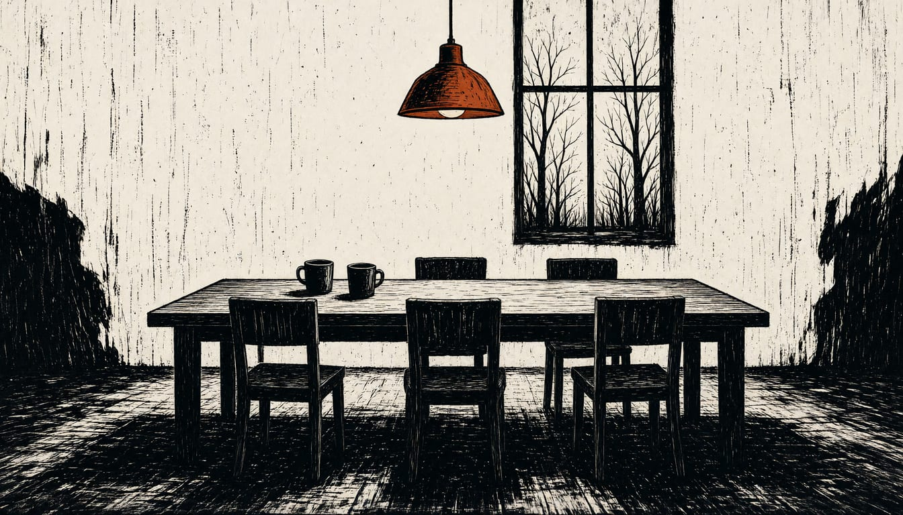

Russia says Europe cannot join Abu Dhabi talks on November 10-11
US envoy Steve Witkoff announced the talks. Kyiv wants an energy truce and a reopened Black Sea, and says it needs an extra 70 billion euros from Europe next year.

A US-brokered meeting between Ukraine and Russia is set for Abu Dhabi on November 10-11. US envoy Steve Witkoff announced the trilateral talks, with the US mediating working-level negotiations. He called it a step advancing President Trump's mission to end the war. Witkoff said the discussions would focus on post-war security arrangements, de-escalation, humanitarian efforts, and next steps toward peace.
Kremlin spokesman Dmitry Peskov said Europeans cannot join the Abu Dhabi talks because the format is trilateral: Russia and Ukraine, with US mediation. President Volodymyr Zelensky answered that Ukraine insists Europe takes part, yet European governments are unlikely to sit at the table. Zelensky listed what Kyiv wants from the talks: an energy truce, a reopened Black Sea, prisoner exchanges and a leaders' meeting.
The European Commission will host US, Ukrainian and European officials in Brussels on November 4-5 to discuss Ukraine's post-war recovery. The Commission said the meeting continues October talks in Miami and Oslo, with France, Germany, the UK, NATO and the World Bank taking part. Zelenskyy said Ukraine needs an extra 70 billion euros from European countries next year.
Russia sends a delegation led by Vladimir Medinsky, a presidential aide. The Kremlin said it would include officials from several agencies, among them the foreign ministry, with the president still to approve the final list. Ahead of the talks, Kyiv says it has Russian war plans to knock out 90 percent of Ukraine's utility services in subzero temperatures, to force the government to capitulate. A UN report called that plan a possible crime against humanity.
Zelensky wants the hardest questions, including territory, to go to the leaders themselves. He said he hopes Abu Dhabi will open the way to a trilateral meeting of leaders, with Putin at the table. German Chancellor Friedrich Merz does not yet see Russia seriously disposed to negotiate peace. He said support for Ukraine continues to the end of the war, and that talks must lead to a ceasefire and a peace agreement.